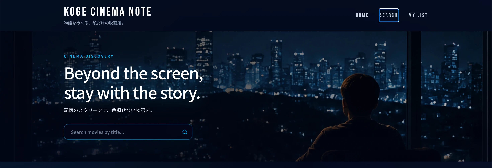
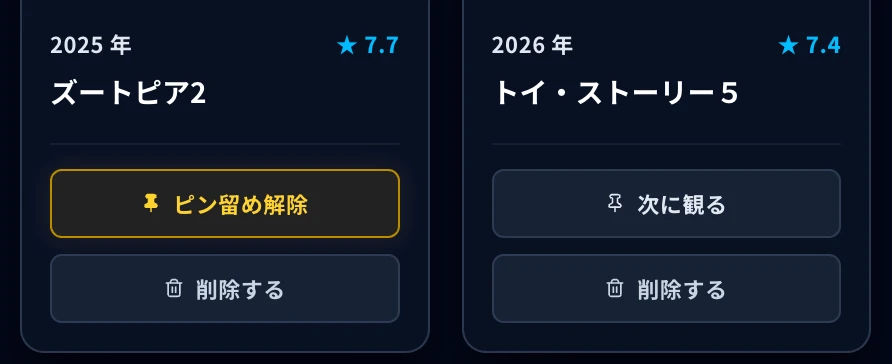
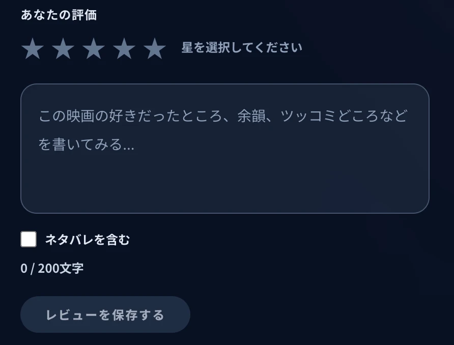

制作背景・制作目的
前作の静的サイト制作では、HTML / CSS / JavaScriptを使い、ページ構成やデザイン調整を中心に制作しました。
その経験を踏まえ、今回はReact / Next.js / TypeScriptを使い、APIから取得したデータを扱う動的なWebアプリケーションに挑戦しました。
KOGE CINEMA NOTEは、映画検索だけで終わるのではなく、お気に入り保存やレビュー投稿、関連映画表示などを通して、 ユーザーが映画との出会いや鑑賞後の記録を残せるサイトを目指して制作しました。
制作概要
制作目的
映画を探し、観たい作品を保存し、観た記憶を残せる映画管理サイトとして制作しました。
担当範囲
企画・設計・デザイン・実装・API連携・レスポンシブ対応まで一貫して担当。
使用技術
Next.js / React / TypeScript / Tailwind CSS / TMDB API / localStorage
主な機能
映画検索・ジャンル検索
TMDB APIを利用し、キーワード検索やジャンル別表示に対応しました。 検索前には今週の話題作を表示し、最初の画面から実際の映画データに触れられる構成にしています。

My List保存
気になる映画をMy Listに保存できるようにしました。 localStorageを使い、リロード後も保存状態を維持できる構成にしています。

レビュー投稿・記録
観た映画の感想を残せるように、レビュー本文、星評価、ネタバレ非表示、評価分布グラフを実装しました。 映画を探すだけでなく、観た記憶を残せる体験を意識しています。

実装で工夫したこと
コンポーネント設計
Header、Hero、MovieCard、MovieList、FavoriteButton、ReviewSectionなど、 役割ごとにコンポーネントを分けました。 修正範囲を整理し、機能追加やデザイン調整をしやすい構成にしています。
APIデータの整形
TMDB APIから取得した映画データをそのまま表示するのではなく、 公開年、評価、画像URL、ジャンル名などを表示用に整えました。 画像やあらすじが取得できない場合の代替表示も用意しています。
localStorage保存
My Listやレビュー情報は映画IDごとにlocalStorageへ保存しました。 リロード後も保存状態を維持し、ユーザーがあとで見返せる構成にしています。
デザインで工夫したこと
映画サイトらしい色設計
ダークトーンをベースに、sky系のアクセントカラーを使用しました。 映画館のような雰囲気と、作品画像が映える落ち着いた画面を意識しています。
Heroの世界観
Heroでは映画の背景画像にグラデーションを重ね、 映画サイトらしい雰囲気と文字の読みやすさを両立させました。 コピーや余白も映画館のような印象になるよう調整しています。
Featuredカード
今週の話題作の1件目を大きく表示するFeaturedカードを追加しました。 通常カードとのメリハリをつけ、トップページに映画サイトらしい迫力を出しています。
ユーザー体験で工夫したこと
あらすじの続きを読む
長いあらすじは途中まで表示し、「続きを読む」で全文を開けるようにしました。 詳細ページが間延びしないよう、必要な情報だけを見やすく表示しています。
ネタバレ非表示
レビュー投稿ではネタバレチェックを用意し、ネタバレを含むレビューはクリックするまで本文を隠すようにしました。 他の作品を探している人にも配慮した設計にしています。
関連映画への回遊
詳細ページに関連映画一覧を表示し、気になる作品から次の作品へ移動できるようにしました。 映画を探し続けられる体験を意識しています。
これまでの経験とのつながり
前作の静的サイト制作で得たHTML / CSS / JavaScriptの経験を土台に、 今回はReact / Next.js / TypeScriptを使い、APIデータや状態管理を扱うWebアプリケーションに挑戦しました。
コンポーネント単位でUIを分けたことで、修正範囲を意識しながら機能追加やデザイン調整を進める経験になりました。
また、APIから取得したデータをそのまま出すのではなく、 ユーザーにとって自然に見える形へ整える点では、これまで培ってきた情報整理力や利用者視点を活かしています。
今後改善したい点
今後は、映画一覧カードから直接My Listへ追加できる機能や、 スマートフォン向けの下部タブバー、コラムコンテンツの追加などを検討しています。
また、現在はlocalStorageで保存しているレビューやMy List情報を、 将来的にはDBや認証機能と組み合わせ、ユーザーごとに管理できる構成へ発展させたいと考えています。

{kind=link}
{kind=link}
{kind=link}